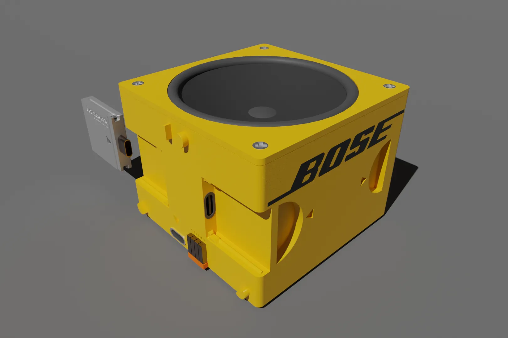

Bits and pieces
2022
University of technology Eindhoven
University of technology Eindhoven
Summary
Project bits is my final bachelor’s project that explores the possibility of creating consumer
electronics products that are easily repairable and last a long time without compromising on the
performance of products. The goal of the project was to find a solution for the current status
quo in the market of consumer electronics in which devices have become more unrepairable due to
companies making it almost impossible for anyone to get into the device, get parts, schematics
and other design choices.
The result of the project is a system of Level repair in which the designer considers the user
and which level they can repair at to ensure that all users can on their level, repair their
devices. The final prototype shows a cycling computer which implemented this design process by
having a separable battery unit and other implementations to make the device more repairable on
multiple levels. A product placed inside a market in which repair and standardization have been
at the foundation on which the market is built. Which has been changing since the market is also
becoming more filled with electronics devices.
Roles
• Literary research
• Ideation
• Electronics prototyping
• Physical realization
• Presenting
• Ideation
• Electronics prototyping
• Physical realization
• Presenting
Final prototype

Research
At the beginning of the project, I immersed myself into the experience of the user. This was done by
attempting repairs on consumer electronics products that otherwise would be replaced. multiple
repairs were attempted and common problems between these repairs were identified.

Literary research
After the personal repair attempts I found a lot of common problems beteen devices. So the next step
was to find out if these problems are commonly experienced. In literary research I found there were
many workshops held in which users attempted repairs and common problems were put into a repair
barriers and motvations (Terzioğlu, N.(2021)).

Ideation sketching
The results of various ideation sessions, with various levels of sketching. From quick and dirty to
fully rendered drawings with more communicative value. Some of these ideas were developed further
while others were scrapped.


_1-min.webp)
Blender renders
After the ideation sketches an interesting future was envisioned. A future in which companies would
sell modules and parts that can be bought separately or bought as an assembled product because of
their modularity. Selling functional parts into separate modules could result in the current drive
in the market to change. From selling slightly upgraded products to a market in which modules are
upgradded. This could also lead to companies having to use universal standards to connect their
product modules because the user might like to mix and match. Blender renders were created by
showing this future with a possible BOSE speaker module and a framework laptops cartridge which
could also be used to deal with various interfaces needed to interact with the device. A glimpse
into a future in which companies embrace this approach instead of being afraid to change the current
status quo.

Prototyping phase
The results of various prototyping sessions, with various levels of prototyping. From low fidelity
prototypes to more high fidelity prototypes with more worked out features. Some of these ideas were
developed further while others were scrapped. Some of the exploratory prototypes are shown below.


realization
After prototyping the level repair system was enevisioned as a possible solution for the status quo
in the market of consumer electronics.The realization of the final product, a cycling computer was
chosen as a prop because it is situated in a market of hobby cyclists in which repair and
replacement of parts is already standard practice. The cycling computer has been designed with
consideration of the Level repair system that is envisioned to be applied to product design.


This is just a sidequest you had to hide text as easter eggs which looks like a line